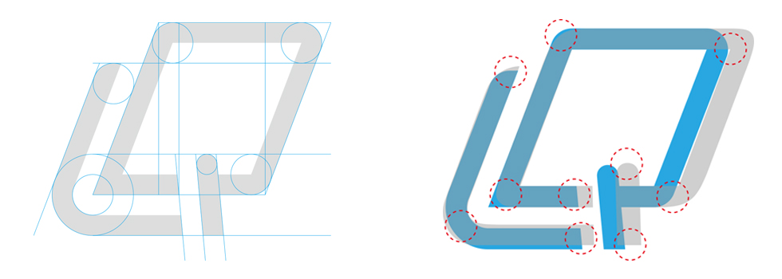
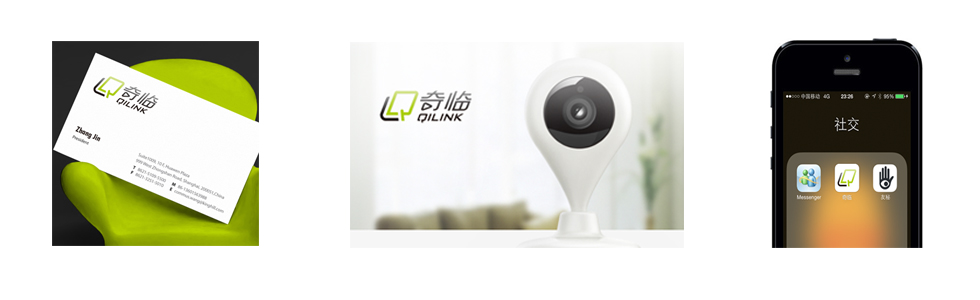

奇，万里之外依然了若指掌,弹指间拥有不同空间的奇妙瞬间
临，虽身不能至却恰如亲临,同步营造安全，趣味，快乐的参与感
奇临，在英语的习惯里，会倒装为临奇，缩写即LQ。\n
这里，我们将 Q 图形化成一根与屏幕进行互动的手指，寓意智能移动设备的操控性。
设计将这两个首字母拼合在一起，构成了连续的相片，
在时间和空间上可以无限延伸，即奇酷的瞬间连续成精彩生活。
左下角两个锐角造型有着对外散发、社交传播的含义。
汉字奇的一部分又图形化为播放键，
这里的播放键是心理上的，意为随心掌握每一个瞬间
 